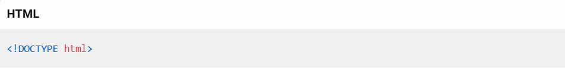
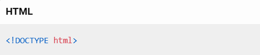
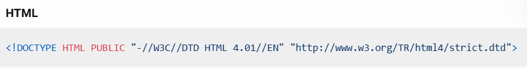
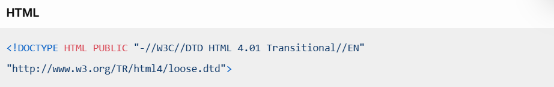
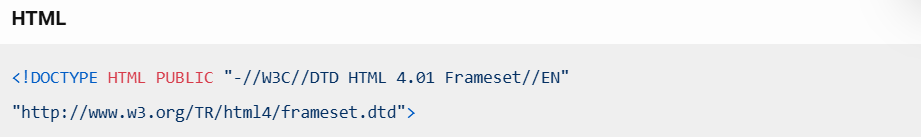
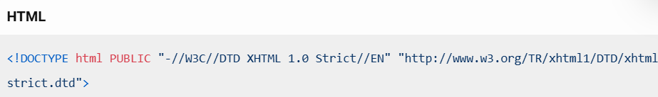
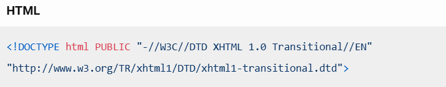
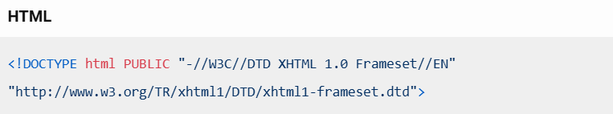
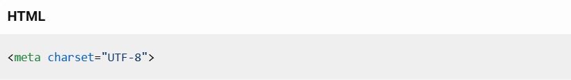

Doctype
¿Que es ?
El DOCTYPE es una declaración que se coloca al inicio de un documento HTML para indicar al navegador qué versión de HTML se está utilizando. Esto es crucial porque le permite al navegador interpretar y mostrar correctamente el contenido de la página web.
¿Como se declara?
En HTML5, la declaración DOCTYPE es muy simple y se escribe así:

¿Como funciona?
El DOCTYPE funciona como una instrucción para el navegador, indicándole cómo debe interpretar el código HTML de la página. Aquí te explico cómo funciona en detalle:
- Identificación de la versión de HTML: El DOCTYPE especifica la versión de HTML que se está utilizando. Por ejemplo, indica que se está usando HTML5.
- Modo de renderizado: Dependiendo del DOCTYPE, el navegador puede operar en diferentes modos:
- Modo estándar: El navegador sigue las especificaciones oficiales de HTML y CSS, asegurando una representación precisa y consistente.
- Modo quirks: Si no se especifica un DOCTYPE o se usa uno incorrecto, el navegador puede entrar en un modo de compatibilidad para páginas antiguas, lo que puede causar inconsistencias en la visualización.
- Validación del documento: Un DOCTYPE correcto ayuda a los validadores de HTML a verificar que el documento cumple con las normas y estándares de la versión de HTML especificada.
¿Cuales son sus tipos?
Existen varios tipos de DOCTYPE que se utilizan para diferentes versiones de HTML y XHTML. Aquí te menciono algunos de los más comunes:
- HTML5:Este es el más sencillo y se utiliza para documentos HTML5.

- HTML 4.01 Estricto:Este DOCTYPE se usa para documentos que siguen estrictamente las reglas de HTML 4.01, sin elementos obsoletos.

- HTML 4.01 Transitorio:Permite el uso de algunos elementos y atributos obsoletos de HTML 4.01.

- HTML 4.01 Frameset:Se utiliza para documentos que incluyen frames.

- XHTML 1.0 Estricto:Para documentos XHTML que siguen estrictamente las reglas de XHTML 1.0.

- XHTML 1.0 Transitorio:Permite el uso de algunos elementos y atributos obsoletos de XHTML 1.0.

- XHTML 1.0 Frameset:Para documentos XHTML que incluyen frames

Conoce más sobre el Doctype aqui
¿Que es UTF-8 ?
UTF-8 (Unicode Transformation Format - 8 bits) es un sistema de codificación de caracteres que puede representar cualquier carácter del estándar Unicode. Aquí tienes una explicación más detallada:
- Codificación de caracteres: UTF-8 utiliza entre 1 y 4 bytes para codificar cada carácter. Los caracteres más comunes, como los del alfabeto inglés, se codifican con un solo byte, mientras que los caracteres menos comunes, como los de algunos alfabetos asiáticos, pueden necesitar hasta cuatro bytes
- Compatibilidad: Es retrocompatible con ASCII, lo que significa que cualquier texto en ASCII es también un texto válido en UTF-8 sin necesidad de cambios.
- Uso en la web: UTF-8 es la codificación de caracteres más utilizada en la web. Permite que los navegadores y otros programas muestren correctamente texto en cualquier idioma
- Ventajas:
- Universalidad: Puede representar cualquier carácter de cualquier idioma.
- Eficiencia: Usa la menor cantidad de bytes posible para cada carácter.
- Compatibilidad: Funciona bien con sistemas y protocolos que esperan texto en ASCII
Por ejemplo, en un documento HTML, puedes especificar que estás usando UTF-8 con la siguiente línea en el head del documento:

¿Usos del UTF-8 ?
UTF-8 se utiliza ampliamente debido a su capacidad para representar cualquier carácter Unicode, lo que lo hace extremadamente versátil y útil en diversos contextos. Aquí te menciono algunos de los usos más comunes:
- Páginas web: La mayoría de los sitios web utilizan UTF-8 para asegurar que el contenido se muestre correctamente en cualquier idioma. Esto es crucial para la accesibilidad global y la correcta visualización de caracteres especiales
- Correos electrónicos: Los programas de correo electrónico utilizan UTF-8 para codificar los mensajes, garantizando que los caracteres se muestren correctamente sin importar el idioma del remitente o del destinatario
- Bases de datos: UTF-8 es comúnmente utilizado en bases de datos para almacenar texto en múltiples idiomas, permitiendo búsquedas y manipulaciones de datos sin problemas de codificación.
- Sistemas operativos y aplicaciones: Muchos sistemas operativos y aplicaciones utilizan UTF-8 para manejar nombres de archivos, textos de interfaz y otros datos textuales, asegurando la compatibilidad y la coherencia en diferentes plataformas.
- Redes sociales y motores de búsqueda: Las plataformas de redes sociales y los motores de búsqueda utilizan UTF-8 para manejar y mostrar contenido en diversos idiomas, lo que es esencial para su funcionamiento global.
- Documentos y archivos: UTF-8 se utiliza en documentos de texto, archivos de configuración y otros tipos de archivos para asegurar que los caracteres se representen correctamente en cualquier sistema3.
Estos usos hacen de UTF-8 una codificación de caracteres esencial para la comunicación y el almacenamiento de información en la era digital.
Conoce más sobre el UTF-8 aqui
Caracteres especiales
| Carácter |
Código HTML |
Descripción |
| & |
& |
Ampersand |
| < |
< |
Menor que |
| > |
> |
Mayor que |
| " |
" |
Comillas dobles |
| ' |
' |
Comillas simples |
| © |
© |
Copyright |
| ® |
® |
Marca registrada |
| ™ |
™ |
Marca comercial |
| € |
€ |
Euro |
| £ |
£ |
Libra esterlina |
| ¥ |
¥ |
Yen |
| ¢ |
¢ |
Centavo |
| § |
§ |
Sección |
| ¶ |
¶ |
Párrafo |
| • |
• |
Viñeta |
| – |
– |
Guion corto |
| — |
— |
Guion largo |
| ± |
± |
Más/menos |
| × |
× |
Multiplicación |
| ÷ |
÷ |
División |
| ° |
° |
Grado |
| µ |
µ |
Micro |
| ¶ |
¶ |
Párrafo |